Astronomia
"Os céus declaram a glória de Deus, e o firmamento anuncia a obra das suas mãos." — Salmos 19:1
O Universo como Catedral
Quando contemplamos o céu noturno, não vemos um acidente cósmico — vemos a assinatura de um Criador que chama as estrelas pelo nome.
Eclipses, Meteoros e Luz
O que causa um Eclipse
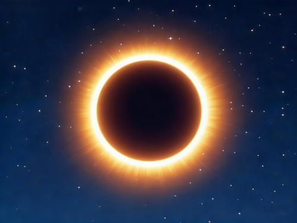
Um eclipse acontece quando um corpo celeste passa diante de outro, bloqueando sua luz.
No eclipse solar, a Lua se posiciona entre o Sol e a Terra, projetando sua sombra sobre nós.
No eclipse lunar, é a Terra que fica entre o Sol e a Lua, lançando sua sombra sobre o satélite.
O que é uma Estrela Cadente
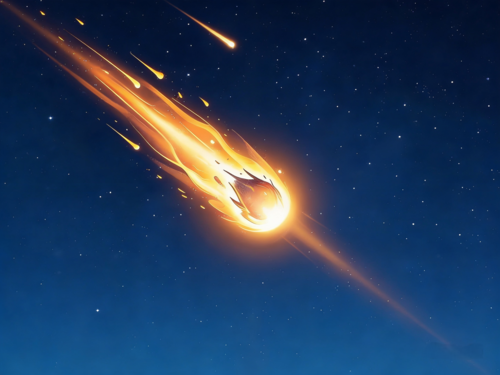
Apesar do nome poético, estrelas cadentes não são estrelas. São pequenos fragmentos de rocha ou poeira espacial — chamados meteoroides — que entram na atmosfera terrestre em altíssima velocidade. O atrito com o ar os aquece e produz o rastro luminoso chamado meteoro.
Quando vários meteoros caem na mesma noite, temos as belas chuvas de meteoros, como as Perseidas e as Leônidas.
Velocidade da Luz
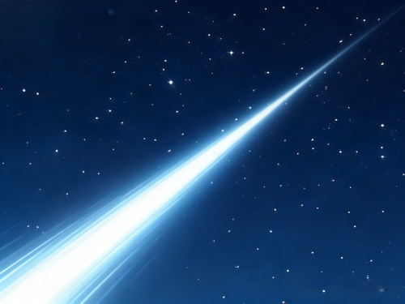
A luz viaja a aproximadamente 299.792 km/s — quase 300 mil quilômetros por segundo. Em um único segundo, ela poderia dar 7,5 voltas ao redor da Terra.
É o limite máximo de velocidade do universo. A luz do Sol leva cerca de 8 minutos e 20 segundos para chegar até nós, e a da segunda estrela mais próxima (Proxima Centauri), cerca de 4,2 anos.
A Lua
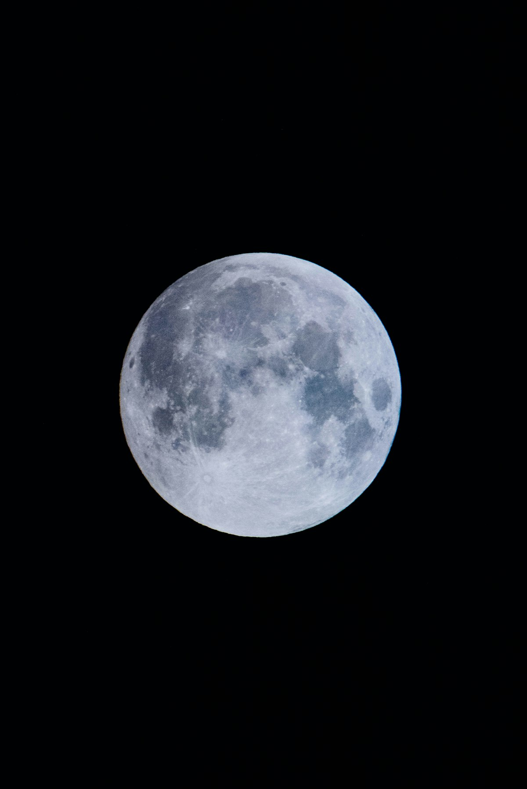
O Corpo Celeste mais próximo
A Lua é o único satélite natural da Terra e o astro mais próximo de nós no universo.
Distância média: aproximadamente 384.400 km da Terra. Tão longe que poderíamos enfileirar todos os outros planetas do Sistema Solar entre nós e ela.
Influência nas marés: a gravidade da Lua atrai as águas dos oceanos, criando duas elevações — uma do lado voltado para a Lua, outra no lado oposto. À medida que a Terra gira, essas elevações se manifestam como marés altas, alternando-se com marés baixas. O Sol também contribui, mas a influência lunar é cerca de duas vezes maior.
"E disse Deus: Haja luminares no firmamento dos céus... o luminar maior para governar o dia, e o luminar menor para governar a noite." — Gênesis 1:14-16
Sol, Terra e Lua
Posições relativas durante os eclipses
Eclipse Solar
A Lua fica entre o Sol e a Terra
A sombra da Lua é projetada sobre uma pequena região da Terra, escurecendo o dia.
Eclipse Lunar
A Terra fica entre o Sol e a Lua
A sombra da Terra cobre a Lua, que pode adquirir um tom avermelhado — a famosa "Lua de Sangue".
Movimentos da Terra
Rotação: A Terra gira em torno do próprio eixo a cada 24 horas — causando o dia e a noite.
Translação: A Terra orbita o Sol em 365 dias e 6 horas — definindo o ano.
Revolução: A Lua completa uma volta ao redor da Terra a cada 27,3 dias, sempre mostrando a mesma
face para nós.
O Sistema Solar
Oito planetas orbitando o Sol em ordem perfeita
Mnemônico para memorizar: "Minha Vó Tem Muitas Joias Sobre Um Navio"
Sobre Plutão
Plutão foi considerado o nono planeta do Sistema Solar até 2006. Nesse ano, a União Astronômica Internacional definiu regras mais precisas para classificar planetas.
Para ser um planeta, o corpo celeste precisa:
• Orbitar o Sol
• Ter formato aproximadamente esférico
• Ter "limpado" sua órbita (ser dominante gravitacionalmente)
Plutão não atende ao terceiro critério, pois compartilha sua órbita com outros objetos do Cinturão de Kuiper. Por isso, foi reclassificado como planeta anão.
Estrelas Fixas
Cinco estrelas para identificar
Sirius
A mais brilhante do céu noturno (Cão Maior)
Polaris
A Estrela do Norte (Ursa Menor)
Betelgeuse
A gigante vermelha de Órion
Rigel
A azul brilhante de Órion
Antares
O coração do Escorpião
Estrela × Planeta
As estrelas fixas são astros com luz própria, formados por enormes massas de gases incandescentes. Estão a distâncias gigantescas e parecem manter sempre a mesma posição umas em relação às outras — daí o nome "fixas".
Os planetas, por outro lado, não emitem luz própria — apenas refletem a luz do Sol. Eles se movem visivelmente entre as estrelas ao longo das semanas (a palavra "planeta" vem do grego planetes, "errante").
Dica de observação: as estrelas cintilam (piscam) por causa da atmosfera, enquanto os planetas brilham com luz constante e firme.
Constelações
Uma constelação é um agrupamento aparente de estrelas no céu que, observadas da Terra, formam figuras imaginárias — animais, objetos ou personagens. Apesar de parecerem próximas entre si, na realidade as estrelas de uma mesma constelação podem estar a distâncias muito diferentes umas das outras.
Atualmente, a União Astronômica Internacional reconhece 88 constelações oficiais, que servem como mapa para localizar objetos celestes. Os antigos navegadores se orientavam por elas — e ainda hoje, elas ajudam observadores e desbravadores a explorar o firmamento.
A Bíblia menciona constelações desde tempos remotos: em Jó 38:31-32, Deus pergunta: "Podes atar as cadeias das Sete Estrelas (Plêiades), ou soltar os laços do Órion? Ou fazer sair as constelações a seu tempo?"
Seis Constelações para Conhecer
CRUZEIRO DO SUL
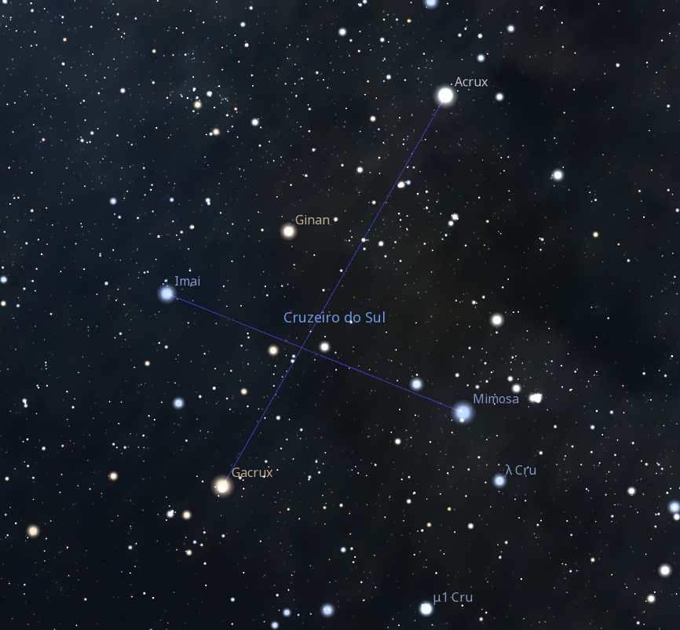
Pequena e marcante, formada por 5 estrelas em cruz. Indica o Sul geográfico — visível o ano todo no Hemisfério Sul.
ÓRION
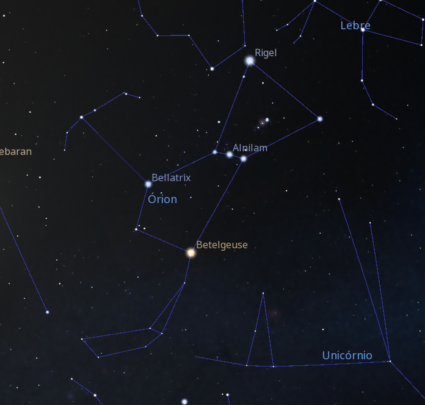
O Caçador — uma das mais belas e fáceis de identificar, com as "Três Marias" formando seu cinturão.
ESCORPIÃO
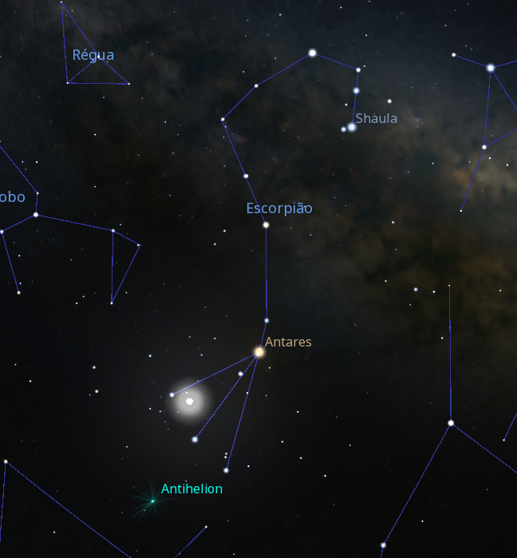
Em forma de escorpião com cauda curva, dominada pela vermelha Antares — visível no inverno.
URSA MAIOR
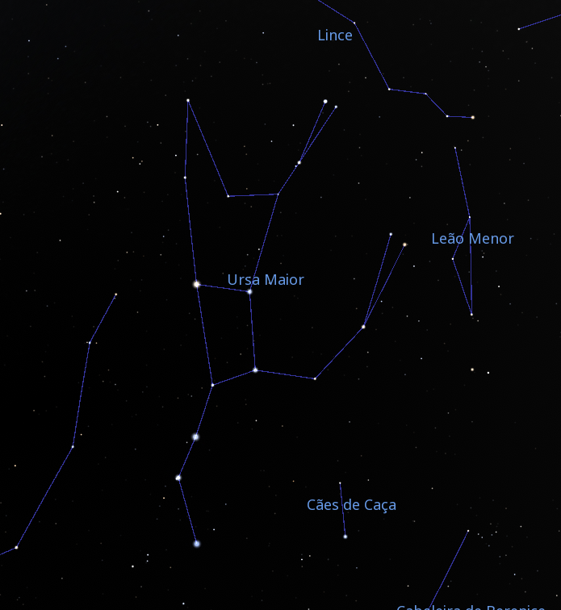
Famosa pelo "Grande Carro" ou "Caçarola" — guia para encontrar a Estrela Polar.
CÃO MAIOR
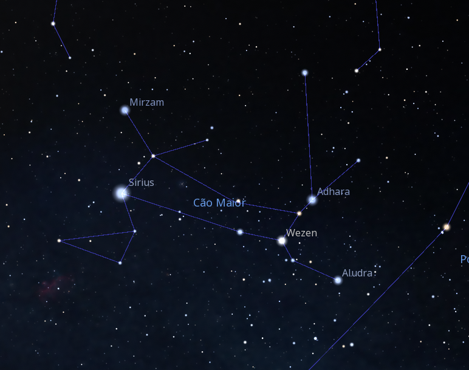
Abriga Sirius, a estrela mais brilhante do céu. Acompanha Órion na caçada.
TOURO
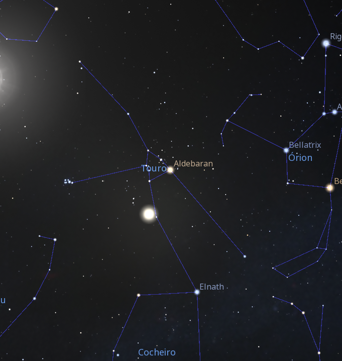
Lar do aglomerado das Plêiades (Sete Estrelas) e da estrela Aldebarã, o "olho" do Touro.
Visíveis o Ano Todo (Hemisfério Sul)
Cruzeiro do Sul e Centauro são duas constelações circumpolares em nossa região — ou seja, nunca se põem no horizonte. Estão visíveis em todas as estações do ano.
A Via Láctea
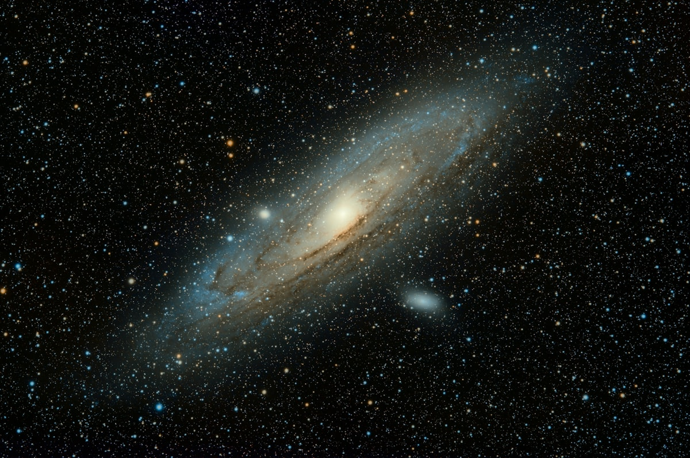
"Via Láctea" significa, em latim, "caminho de leite" — em referência à faixa esbranquiçada que cruza o céu noturno.
É a galáxia em que vivemos: uma imensa estrutura espiral contendo centenas de bilhões de estrelas, além de planetas, gases, poeira cósmica e nebulosas. Tem cerca de 100 mil anos-luz de diâmetro.
O Sistema Solar fica em um dos braços espirais da galáxia, e quando olhamos para o céu em uma noite escura e sem luar, longe das luzes da cidade, podemos ver essa faixa luminosa atravessando o firmamento — é a luz combinada de milhões de estrelas distantes da nossa própria galáxia.
"Levantai ao alto os vossos olhos, e vede quem criou estas coisas; foi aquele que faz sair o exército delas segundo o seu número; ele as chama a todas pelos seus nomes." — Isaías 40:26
Dica de observação: nos meses de inverno (junho a agosto), no Hemisfério Sul, a Via Láctea aparece com toda a sua intensidade no céu — um espetáculo inesquecível para qualquer desbravador.
Estrela da Manhã & Vespertina
A "Estrela da Manhã" e a "Estrela Vespertina" são, na verdade, o planeta Vênus.
Vênus é o planeta mais próximo da Terra e o terceiro objeto mais brilhante do céu, depois do Sol e da Lua. Por causa de sua órbita interna em relação à Terra, sempre o vemos próximo do Sol — nunca no meio da noite.
Quando aparece no céu antes do amanhecer, no leste, é chamado Estrela da Manhã (ou Estrela d'Alva). Quando aparece logo após o pôr do sol, no oeste, é chamado Estrela Vespertina (ou Estrela da Tarde).
Por séculos, gregos e romanos pensaram tratar-se de duas estrelas diferentes — chamando-as Phosphorus e Hesperus — até descobrirem que era o mesmo astro.
"Eu sou... a brilhante estrela da manhã." — Apocalipse 22:16
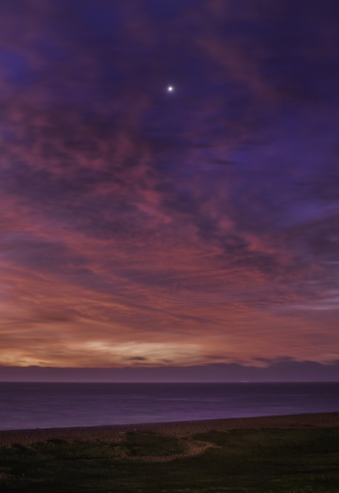
Zênite & Nadir
Zênite
É o ponto da esfera celeste situado diretamente acima do observador — exatamente sobre a sua cabeça. Quando o Sol passa pelo zênite, ao meio-dia, ele está no ponto mais alto do céu naquele dia.
Nadir
É o ponto oposto ao zênite — fica diretamente abaixo do observador, no lado oculto da Terra. Não pode ser observado, pois está bloqueado pelo solo sob nossos pés.
A linha imaginária que conecta o zênite ao nadir, passando pelo observador, chama-se linha vertical — fundamental para a orientação astronômica.
Sabia que…?
Ano-luz
É a distância que a luz percorre em um ano: cerca de 9,5 trilhões de km. Não é uma medida de tempo, mas de espaço.
O Sol
Cabem mais de 1,3 milhão de Terras dentro do Sol. Mesmo assim, é considerado uma estrela de tamanho médio.
Plêiades
O aglomerado das "Sete Estrelas" é mencionado em Jó 38:31 e ainda é visível a olho nu na constelação de Touro.
Júpiter
É tão grande que poderia conter todos os outros planetas do Sistema Solar dentro de si — e ainda sobraria espaço.
Saturno
Sua densidade é tão baixa que, se houvesse um oceano grande o suficiente, Saturno flutuaria sobre a água.
O Universo
Os astrônomos estimam haver mais de 200 bilhões de galáxias — cada uma com bilhões de estrelas.
"Pela fé entendemos que os mundos pela palavra de Deus foram criados; de maneira que aquilo que se vê não foi feito do que é aparente." — Hebreus 11:3